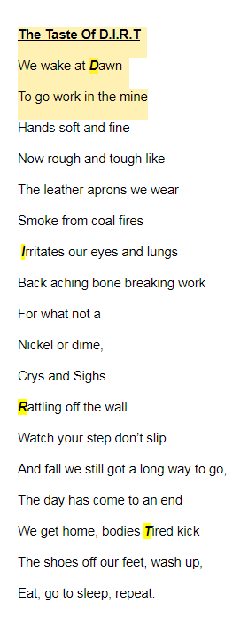
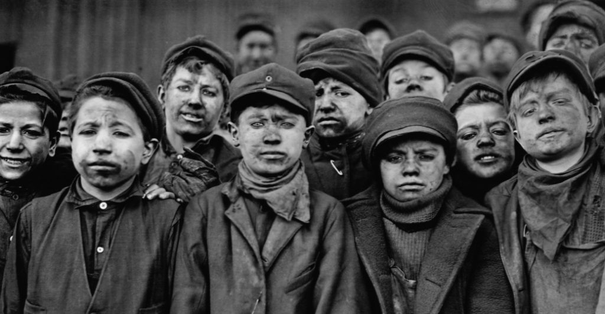
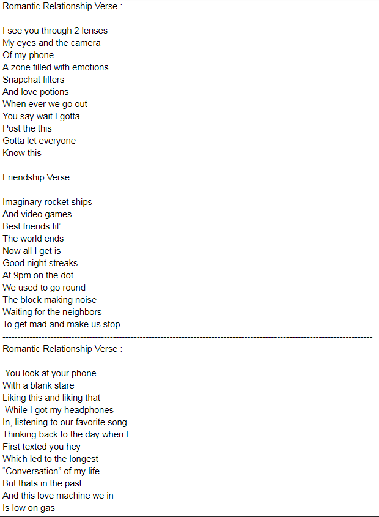
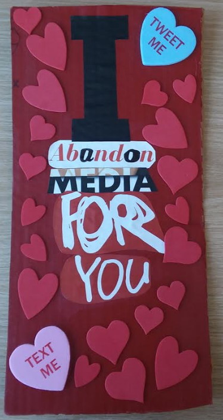

My Poem:
The poem below takes you through a day in the life of a young boy who works in a coal mine. I took inspiration from the photo I chose because it helped me create some imagery in my poem.
 The image below is my social media poem that talks about two different relationships, friendships and romantic relationships.
__________________________________________________________________________________
This is the art piece that I had to creat for my poem. My art piece and my poem had to connect through the principles of composition. A few principles that I used were rhythm and movement.

click here for articles on friendship relationships
click here for articles on romantic relationships